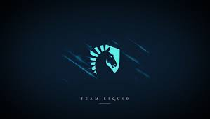
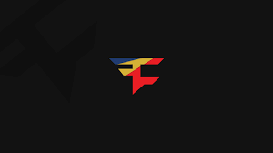
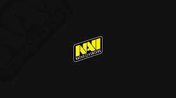
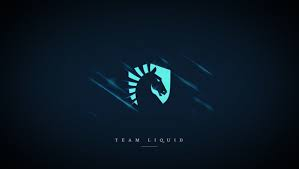
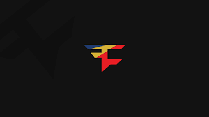
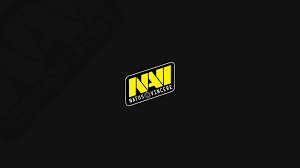

There are a lot of different teams and organizations within the esports industry, most titles separated by geological orientation for their regular season before they have a big tournament called the worlds or the grand finals where the top teams gather and compete to see who is the best. The regions that compete in most titles are North America, Asia, Latin America, European teams and lots of other teams.
Most of these teams don't just compete in esports, they have at least one person from each category listed on the previous page. What a lot of teams do to build social media presence and just get their name out there is create content with their pro teams doing something other than playing the game, and they have designated people that make content for them(Content Creators) and these people bring their fan bases from there own personal content and bringing them into the team they are signed too.
Here is a list of some of these teams to see who you would want to follow!
 





There are so many more teams the list could go on and on but here are some of the most popular teams from all around the world at the most competitive level the tier 1 level.
I Hope this page Helped you learn a little more about Esports!